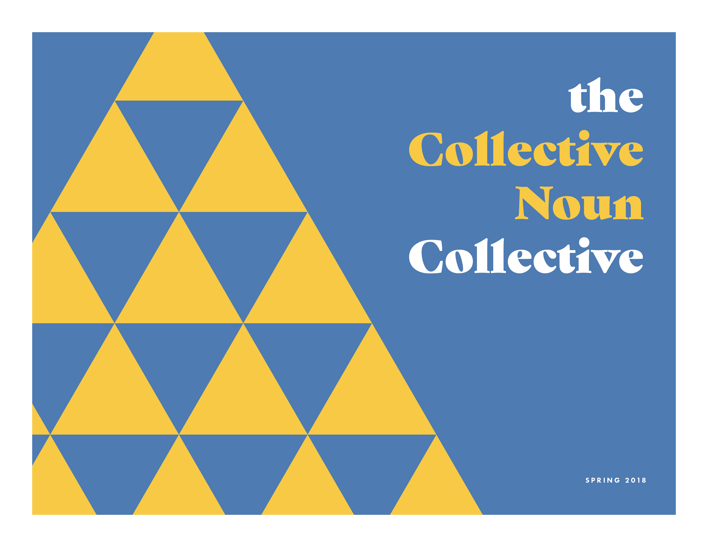

Art-ish
the Collective Noun Collective
Imagine that a linguistic cabal with a penchant for puns oversees the naming of things taken as a whole, and publishes their pronouncements in a semi-annual zine…
I love to build command-line tools and sort-of-bots, make dumb jokes, and doodle things a few pixels at a time. I work for Panic Inc. in Portland, Oregon.
Snapshot a Mac app in any state, then deploy the same exact configuration again in the future.
Get started with the Fig Cookbook.
Available through Homebrew.
Pixelated cityscapes to brighten your timeline.
Imagine that a linguistic cabal with a penchant for puns oversees the naming of things taken as a whole, and publishes their pronouncements in a semi-annual zine…